Decoding Movement Intentions with Brain-Computer Interfaces
In this presentation, we’ll explore how we used a machine learning technique called Support Vector Machines (SVMs) to interpret brain activity (EEG signals) and figure out whether someone intends to move their left or right hand. We looked at data from both actual physical movements and purely imagined movements, evaluating how well our SVM approach—using linear, RBF, and polynomial kernels—could distinguish between the two intentions in different scenarios. We’ll walk through our methods, including how we defined the classification problem and ensured our performance measures were reliable, and discuss what the results tell us about the potential and challenges of using SVMs for brain-computer interfaces.
1 Introduction
For decades now, researchers have been exploring brain-computer interfaces (BCIs) as a potential way for individuals with paralysis or other severe motor disabilities to interact with the world again. It’s an incredible field, but it comes with significant hurdles – everything from reliably picking up brain signals to accurately figuring out what those signals actually mean in terms of user intent.
Project Goals: What we’re focusing on in this project is one specific piece of that puzzle: how can we classify electrical brain activity, measured non-invasively using electroencephalography (EEG), to understand someone’s intended movement? To do this, we employed a machine learning tool called a Support Vector Machine, or SVM, exploring different configurations (kernels) to see what works best.
Approach Overview: Our main goal here was to see if we could determine, just by looking at EEG data, whether a person was intending to move their left hand or their right hand, even if they weren’t physically moving at all. The BCI system enabling this has two parts in our setup: the EEG system that captures the raw brain signals, and the SVM algorithm that interprets those signals and makes the left-vs-right classification.
Report Scope: By the end of this discussion, we’ll have a clear picture of how well different SVM variants perform when applied to this EEG data for decoding movement intentions. We’ll look at the overall accuracy and ROC curves, compare linear, RBF, and polynomial kernels, and also look into some specific factors within the model and the data that influenced how well they worked.
1.1 Motivation
Why is this so important? Well, advancements in BCIs could genuinely change lives for a vast number of people. For some perspective, the 2013 US Paralysis Prevalence & Health Disparities Survey found that nearly 5.4 million people were living with paralysis (Armour et al., 2016). Back then, that was almost 1.7% of the entire US population, and that number has likely only grown. Paralysis often brings profound challenges – the same survey noted that only about 15.5% of these individuals were employed, and over 30% were smokers. Given these severe impacts, technologies that can offer some relief or restore function are incredibly valuable for improving quality of life. BCIs stand out as one of the most promising paths forward to potentially restore movement capabilities and significantly enhance well-being for those affected.
1.2 Background
1.2.1 What is a BCI?
Let’s start with the basics. Our brain is constantly sending out electrical signals that orchestrate everything our body does. But this communication network relies on many biological components, and if any part breaks down, the connection can be lost. For people experiencing this, a Brain-Computer Interface (BCI) offers an alternative route, or a way for the brain’s commands to bypass the damaged pathways and still control external devices or even their own limbs (Nicolas-Alonso & Gomez-Gil, 2012). Ultimately, a BCI acts as a translator, converting brain activity directly into control signals. To make this happen, we need two key things: a way to ‘listen’ to the brain’s signals, and a way to make sense of them. In this project, we’re focusing on non-invasive BCIs that use Electroencephalography (EEG) to pick up those signals.
EEG works by placing sensors on the scalp to detect the tiny electrical fields generated by brain activity. While it has the major advantage of being non-invasive (no surgery required!), the signals we get face some challenges. They’re incredibly complex, often buried in noise (from muscle twitches, eye blinks, even electrical interference from nearby devices), and they’re weakened as they pass through the skull and scalp. Plus, to get a good spatial picture of brain activity, we use many electrodes simultaneously, which results in very high-dimensional data – meaning each snapshot of brain activity has lots of different measurements to consider. Trying to reliably pull out a specific intention, like “move left” versus “move right,” from this noisy, high-dimensional stream requires robust analysis tools. That’s where machine learning comes into play.
1.2.2 What is a Support Vector Machine (SVM)?
Okay, so how do we actually interpret these complex brain signals? That’s where Support Vector Machines, or SVMs, come in. SVMs are a type of supervised machine learning model that are good at classification tasks – essentially, sorting data into predefined categories. You train an SVM by showing it examples that are already labeled (like EEG snippets labeled as “intended left” or “intended right”). The SVM learns the patterns distinguishing these categories. Then, when you give it a new, unlabeled piece of data (a new EEG segment), it uses what it learned to predict which category that new data point belongs to. In our case, the SVM’s job is to look at the features extracted from an EEG signal and decide: “left intention” or “right intention”?
So, how does an SVM actually do this? Conceptually, it tries to find the “best” possible boundary to separate the data points belonging to different classes. Imagine you have a scatter plot with red dots and green dots. If the red dots are mostly in one area and the green dots in another, an SVM tries to draw a line (or, in higher dimensions, a plane or hyperplane) that separates them.
See the plot on the right (in the imagined figure)? That blue line is the decision boundary found by the SVM. What makes SVMs special is how they find this boundary. They don’t just pick any line that separates the groups; they specifically look for the line that creates the largest possible “buffer zone” or margin between itself and the closest points from each class. These closest points, the ones right up against the edge of this buffer zone, are called the “support vectors” – they’re critical because they dictate exactly where the boundary and margin end up. This principle of maximizing the margin often helps the SVM generalize better, meaning it performs well not just on the data it was trained on, but also on new, unseen data. While the math behind it involves optimization, the core idea is finding this widest possible separation. We implement SVMs in our project using sklearn (“SVC,” n.d.).
SVMs turn out to be perfect for the kind of EEG data we’re dealing with. EEG data, with signals from many electrodes, is naturally high-dimensional (204 dimensions in our case!). SVMs are known to handle high-dimensional spaces effectively, potentially better than some other algorithms that can suffer from the “curse of dimensionality.” They can also work well even when the number of training examples isn’t vastly larger than the number of features, which is relevant here. Plus, the focus on maximizing the margin can make the resulting classifier somewhat robust to noise, which is always a concern with EEG.
And SVMs aren’t just for BCIs! They’re used in all sorts of areas, like classifying text (think spam email filters) (Mammone et al., 2009), recognizing faces in images (Guo et al., 2000), and even predicting things like seismic events (Hearst et al., 1998). So, it’s a versatile technology with broad applications, making its study valuable in many contexts.
2 Methods
Alright, let’s walk through how we actually tackled this classification problem. Our process involved a few key stages: getting the right EEG data, preparing it for the SVM, applying the SVM classifier itself, defining the problem formally, and then carefully evaluating how well it performed using a technique called two-level cross-validation.
2.1 Data Acquisition
The foundation for everything is the EEG data. This data came from a single human subject.
- EEG Setup: The recording setup used 102 electrodes placed across the scalp – you can see the layout in the plot below (each blue dot is an electrode). Each electrode provided two pieces of information related to the local electrical field gradient (one for the x-direction, one for the y-direction). So, for every moment in time or trial we recorded, we ended up with 204 distinct data channels or features.
- Experimental Conditions: The data was collected under two different conditions:
- Overt Movement: In this case, the subject physically moved their left or right arm. We’d expect the brain signals during actual movement to be relatively strong and potentially easier to classify.
- Imagined Movement: Here, the subject simply thought about moving their left or right arm, but stayed still. These signals are usually much fainter and harder to detect, but they’re crucial for BCIs intended for people who can’t physically move.
- Data Structure: For both the Overt and Imagined conditions, we have a dataset containing 120 trials labeled “movement 1” and 120 trials labeled “movement 2”. Now, for this specific dataset, we don’t actually know which label corresponds to “left” and which to “right,” but for classification purposes, that doesn’t matter – we just need to distinguish between the two types. This gives us 240 trials in total for each condition (Overt and Imagined). Each single trial is represented by that 204-dimensional feature vector we talked about (the readings from all 204 data channels). Our task is essentially a binary classification problem: given a 204-dimensional vector, decide if it belongs to “movement 1” or “movement 2”.
2.2 Classification with Support Vector Machines (SVMs)
Now, before we jump into the results, let’s look more precisely what the SVM is doing under the hood. Remember, its core job is to find that optimal boundary (a hyperplane in our 204-dimensional space) that best separates the EEG patterns corresponding to “Movement 1” from those corresponding to “Movement 2”.
2.2.1 Mathematical Formulation
If we have \(N\) training trials, each with a feature vector \(x_i\) (our 204 EEG measurements) and a known class label \(y_i\) (which we’ll represent as either -1 for Movement 1 or +1 for Movement 2), a linear SVM tries to find a weight vector \(w\) and a bias term \(b\). These define the separating hyperplane with the equation \(w^T x + b = 0\).
But what if the data isn’t perfectly separable with a straight line (or flat plane)? What if some “Movement 1” points are mixed in with “Movement 2” points? That’s where the soft-margin SVM comes in handy. Instead of insisting on perfect separation, it tries to find a balance: maximize the margin (the buffer zone) while also minimizing the number of points that end up on the wrong side of the boundary or inside the margin. This is done by solving an optimization problem (Hearst et al., 1998):
\[ \min_{w, b, \xi} \frac{1}{2} w^T w + C \sum_{i=1}^{N} \xi_i \]
subject to the constraints:
\[ y_i (w^T x_i + b) \ge 1 - \xi_i, \quad \text{for } i = 1, \dots, N \] \[ \xi_i \ge 0, \quad \text{for } i = 1, \dots, N \]
Breaking down these terms:
- \(w\): The weight vector. It’s perpendicular to the separating boundary. Minimizing its squared length (\(\frac{1}{2} w^T w\)) is equivalent to maximizing the margin width.
- \(b\): The bias term. It shifts the boundary position without changing its orientation.
- \(x_i\): The 204-dimensional feature vector for the \(i\)-th trial.
- \(y_i\): The class label (+1 or -1) for the \(i\)-th trial.
- \(\xi_i\): These are the slack variables. Think of them as measuring how much a data point \(i\) “violates” the margin. If \(\xi_i = 0\), the point is correctly classified and outside the margin. If it’s between 0 and 1, it’s correctly classified but inside the margin. If \(\xi_i > 1\), the point is actually misclassified.
- \(C\): This is the regularization parameter. (It’s equivalent to \(1/\alpha\) in our class notes, and is what sklearn uses.) \(C\) controls the trade-off:
- A large \(C\) puts a heavy penalty on misclassifications (large \(\xi_i\)). The SVM will try very hard to classify all training points correctly, possibly leading to a narrower margin and potentially “overfitting” the training data (meaning it might not generalize well to new data).
- A small \(C\) is more tolerant of misclassifications. It allows for a potentially wider margin, even if some training points end up on the wrong side or within it. This might lead to better generalization but risks “underfitting” if the margin becomes too wide and ignores the underlying structure. Finding the right value for \(C\) (and potentially other parameters like \(\gamma\) or \(d\) for non-linear kernels) is key to getting good performance, and we use a process called cross-validation (which we’ll discuss next) to do this.
Why this works (Convex Optimization):
This mathematical setup is what’s known as a convex optimization problem. This matters because for convex problems, we’re guaranteed that any solution we find that looks like the best locally is the globally best solution. There’s no risk of getting stuck in a suboptimal valley. The objective function (the part we’re minimizing) and the constraints (the rules we must follow) are all convex (they curve upwards like a bowl, mathematically speaking), which makes the whole problem convex (Hearst et al., 1998). This mathematical property is a big reason why SVMs are so reliable and widely used – we know we can find the single best boundary according to our criteria (at least for the linear case and standard formulations).
2.2.2 Handling Non-Linearity: The Kernel Trick
The formulation we just looked at finds a linear boundary (a flat plane). But what if the real distinction between “Movement 1” and “Movement 2” in our EEG data follows a more complex, curved pattern? SVMs have a way to handle this known as the “kernel trick.”
The basic idea is to imagine mapping our original 204-dimensional data into an even higher-dimensional space (Weiße et al., 2006). In this new, much more complex space, the data might magically become linearly separable again. The “trick” is that we don’t actually have to compute the coordinates in this potentially massive new space. Instead, we use kernel functions \(K(x_i, x_j)\). These functions directly calculate what the dot product would be between the mapped vectors \(\phi(x_i)\) and \(\phi(x_j)\) in that high-dimensional space (\(K(x_i, x_j) = \phi(x_i)^T \phi(x_j)\)). Since the math behind the SVM solution relies heavily on these dot products, we can just swap out the simple dot product \(x_i^T x_j\) with our chosen kernel function \(K(x_i, x_j)\). This lets us effectively find a non-linear boundary in the original space without the excess computation of actually working in the super-high-dimensional mapped space.
Common Kernels: In this project, we explored three common kernel options:
- Linear Kernel: \(K(x_i, x_j) = x_i^T x_j\). This is our baseline, assuming a linear separation is sufficient.
- Polynomial Kernel: \(K(x_i, x_j) = (\gamma x_i^T x_j + r)^d\). This allows for curved boundaries defined by polynomials. It introduces new hyperparameters like the degree \(d\), a scaling factor \(\gamma\), and a coefficient \(r\) that need tuning.
- Radial Basis Function (RBF) Kernel (or Gaussian Kernel): \(K(x_i, x_j) = \exp(-\gamma ||x_i - x_j||^2)\). This is a very popular kernel capable of creating highly complex decision boundaries. It uses a hyperparameter \(\gamma\) that controls the “reach” or influence of each training point. Both \(C\) and \(\gamma\) need to be tuned (Han et al., 2012).
2.3 Model Evaluation: Two-Level Cross-Validation
Now we have our SVM model variants (linear, RBF, polynomial). But how do we know which one is actually best for our problem? And how do we choose the optimal values for their hyperparameters (like \(C\) for all, \(\gamma\) for RBF/Poly, \(d\) for Poly)? We need a reliable way to estimate how well each classifier configuration will perform on new, unseen data.
As discussed before, just tuning hyperparameters and evaluating on the same cross-validation splits can lead to inflated performance estimates. To avoid this and get a truly unbiased evaluation while also performing hyperparameter tuning, we rely on two-level cross-validation (Cross-Validation of Component Models, n.d.).
The Process:
- Outer Loop (Performance Estimation): Divides the data into \(k_{outer}\) folds (here, 6). Each fold serves once as the final, held-out test set.
- Inner Loop (Hyperparameter Tuning): Operates only on the \(k_{outer}-1\) folds designated as the outer training set for that round. It performs its own cross-validation (using \(k_{inner}=5\) folds) to find the best hyperparameters (e.g., best combination of \(C\) and \(\gamma\) for RBF, or \(C\), \(\gamma\), \(d\), \(r\) for Poly) without seeing the outer test fold.
- Training and Testing: Once the inner loop selects the best hyperparameters for that outer fold, a new SVM model is trained with those parameters on the entire outer training set. This model is then evaluated once on the held-out outer test set.
This entire process is repeated for all \(k_{outer}\) outer folds, and the final performance metrics (accuracy, AUC) are averaged across the results from these outer test sets. This rigorous approach ensures that our hyperparameter tuning doesn’t bias our final performance evaluation, giving us a fair comparison between the different kernel types and a reliable estimate of their true generalization ability. We applied this entire two-level CV procedure separately for the linear, RBF, and polynomial SVMs.
2.4 Formulating the Classification Problem
Explicitly defining the machine learning problem we’re solving here:
Input Features: For each trial (either an overt or imagined movement), the input to our classifier is a single vector \(x \in \mathbb{R}^{204}\). This vector represents the measurements from the 102 electrodes, with each electrode contributing two gradient values (x and y direction), resulting in 204 features per trial. These features are assumed to capture the spatial and electrical characteristics of the brain activity during that trial.
Target Classes: The output we want to predict is a binary class label, \(y \in \{\text{"Movement 1"}, \text{"Movement 2"}\}\). As mentioned, the dataset labels these generically, corresponding to the intention to move either the left or right hand (mapping unknown). Our goal is to distinguish between these two distinct intentions based on the EEG features.
Objective: The objective is to learn a classification function \(f: \mathbb{R}^{204} \rightarrow \{\text{"Movement 1"}, \text{"Movement 2"}\}\) using a Support Vector Machine. We aim to find the function \(f\) (defined by the SVM’s parameters, including the kernel type and its associated hyperparameters like \(C\), \(\gamma\), \(d\)) that minimizes classification errors on unseen data. The two-level cross-validation procedure is our method for estimating this generalization performance and for selecting the optimal hyperparameters for each kernel type based on the training data.
3 Results
So, let’s dive into the results. We applied our SVM classifiers (Linear, RBF, and Polynomial kernels) using the two-level cross-validation approach. We’ll look at performance for the Same-Train scenarios (Overt-train/Overt-test and Imagined-train/Imagined-test) and the Cross-Train scenarios (Overt-train/Imagined-test and Imagined-train/Overt-test). We’ll compare the kernels based on ROC curves and accuracy scores.
3.1 Linear Kernel Classification Performance
We’ll start with the baseline linear SVM.
3.1.1 Same-Train Scenarios (Linear SVM)
ROC Curves: Figures 1 and 2 show the ROC curves for the linear SVM when trained and tested on Overt and Imagined data, respectively.
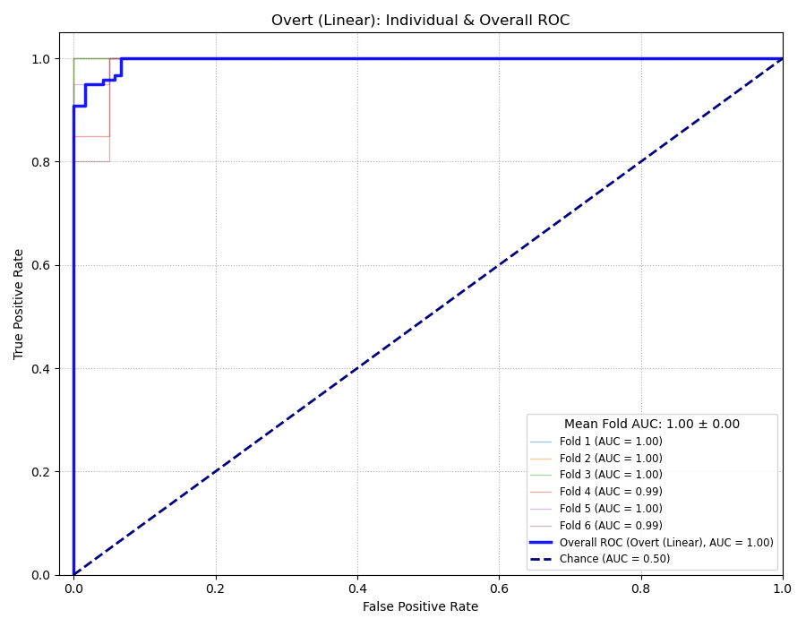Figure 3: Individual Fold and Overall ROC Curves for Same-Train Overt (Linear SVM) 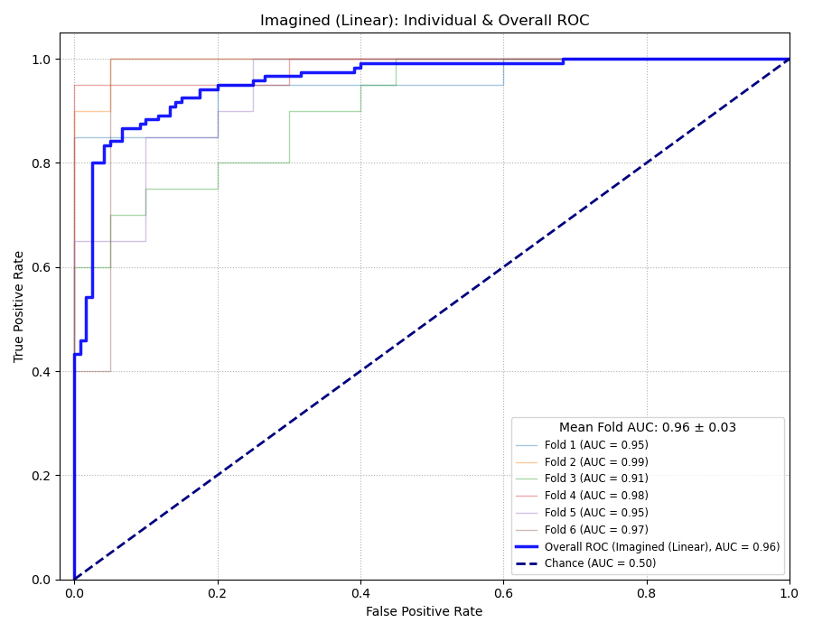Figure 4: Individual Fold and Overall ROC Curves for Same-Train Imagined (Linear SVM) Interpretation: As previously discussed, the linear SVM performed better on Overt data (Avg AUC in Fig. 1) than Imagined data (Avg AUC in Fig. 2), likely due to stronger signals. Performance was reasonably consistent across folds for Overt, but more variable for Imagined.
Accuracy: Tables 1 and 2 show the fold-by-fold accuracy and optimal \(C\) values.
Table 1: Per-Fold Accuracy Results for Same-Train Overt (Linear SVM)
Fold Accuracy Optimal C 1/6 0.9500 0.1 2/6 0.9750 1 3/6 0.9750 1 4/6 0.9000 0.001 5/6 0.9750 0.1 6/6 0.9500 0.1 Avg 0.9542 Std Dev 0.0264 Table 2: Per-Fold Accuracy Results for Same-Train Imagined (Linear SVM)
Fold Accuracy Optimal C 1/6 0.8500 0.1 2/6 0.9500 0.01 3/6 0.8000 0.01 4/6 0.9250 0.1 5/6 0.8500 0.1 6/6 0.9500 0.1 Avg 0.8875 Std Dev 0.0580 Interpretation: Average accuracy was ~95.4% for Overt and ~88.8% for Imagined, confirming the ROC trend. Variability across folds was higher for Imagined data.
3.1.2 Cross-Train Scenarios (Linear SVM)
ROC Curves: Figures 3 and 4 show the ROC curves for the cross-training scenarios using the linear SVM.
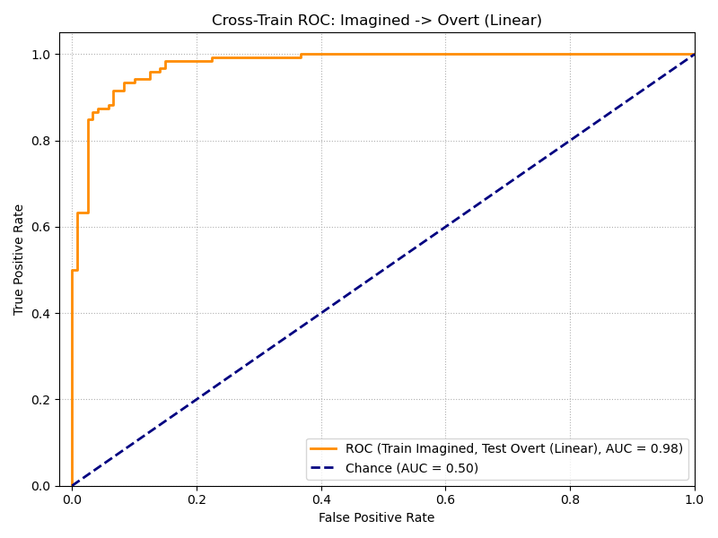Figure 5: ROC Curve for Cross-Training: Train Imagined -> Test Overt (Linear SVM) 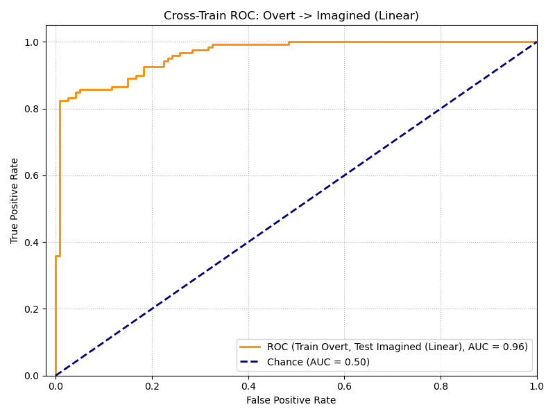Figure 6: ROC Curve for Cross-Training: Train Overt -> Test Imagined (Linear SVM) Comparison: As noted before, training on Imagined and testing on Overt (Fig 3, ~91.3% Acc, AUC 0.97) performed slightly better than training on Overt and testing on Imagined (Fig 4, ~89.2% Acc, AUC 0.96). Both fell between the same-train performances, suggesting some shared patterns but also distinct differences between the conditions.
3.1.3 Feature Importance (Linear SVM Weights)
Spatial and Stem Plots: Figures 5-8 visualize the weights for the linear SVM.
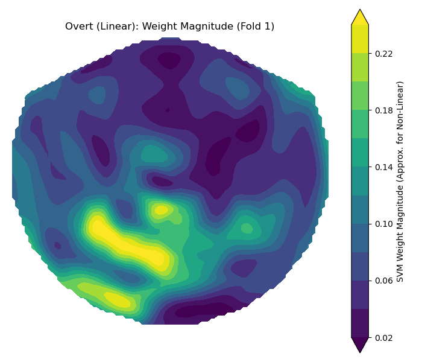 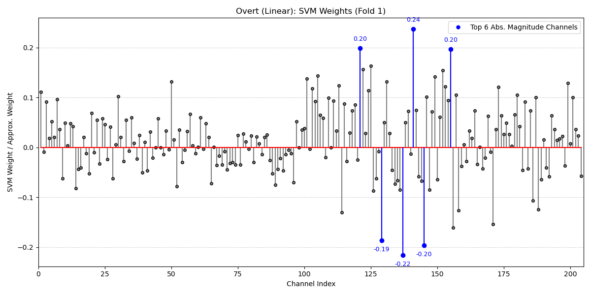 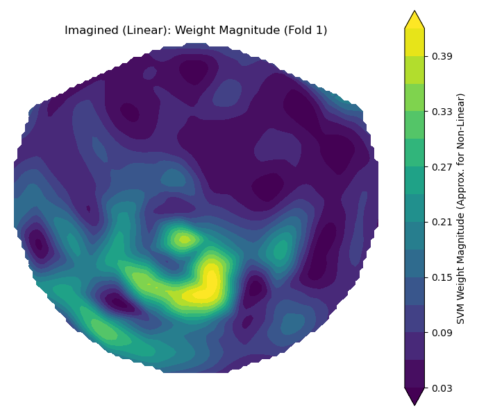 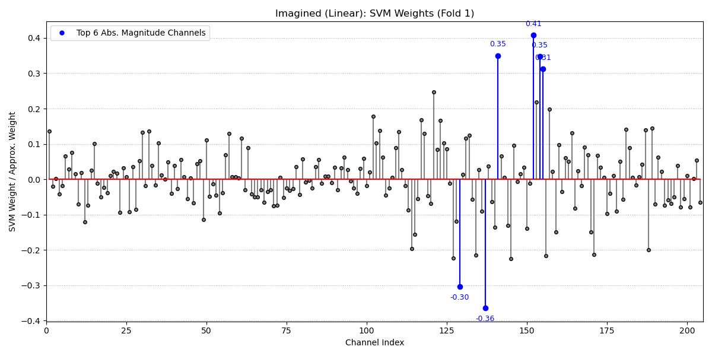
Interpretation: The weights highlighted channels primarily over sensorimotor areas, consistent with neuroscience. The primary motor cortex lies in the middle of the brain, which is the most heavily weighted part. There was significant overlap in the most important channels (e.g., 128, 136, 140) between Overt and Imagined conditions, supporting the idea of shared neural substrates.
3.2 RBF Kernel Classification Performance
Now let’s consider the performance when using the Radial Basis Function (RBF) kernel, which allows for more complex, non-linear decision boundaries. The hyperparameters \(C\) and \(\gamma\) were tuned simultaneously in the inner loop of the two-level CV.
3.2.1 Same-Train Scenarios (RBF SVM)
ROC Curves: Let’s assume Figures 9 and 10 show the ROC curves for the RBF SVM on Overt and Imagined data, respectively.
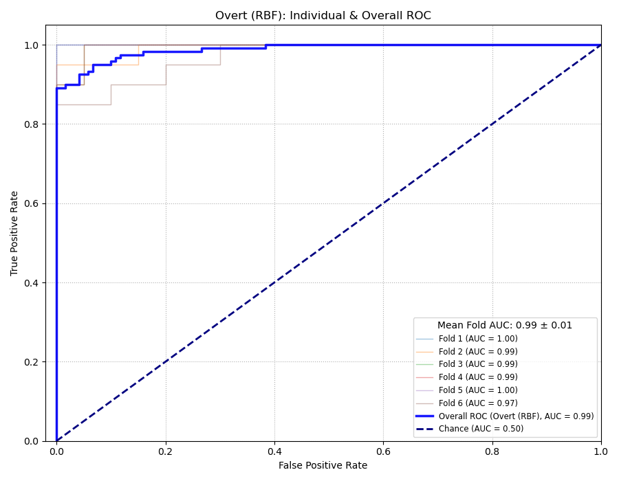 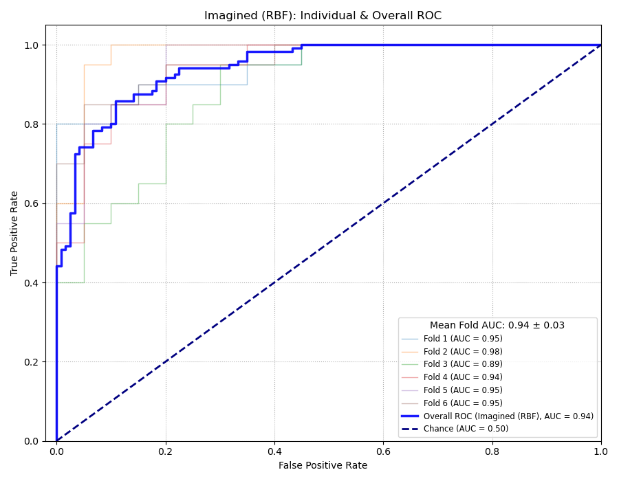
Interpretation: The average AUC for the Overt data (Figure 9) is approximately 0.99, suggesting excellent performance, slightly higher than the linear kernel’s average. For the Imagined data (Figure 10), the average AUC is around 0.94, which is also higher than the linear kernel’s average (~0.92 based on visual inspection of Fig 2), indicating the RBF kernel might be capturing useful non-linearities, especially in the more challenging Imagined condition. Variability between folds still seems present, particularly for Imagined data.
Accuracy: Similarly, assume Tables 3 and 4 present the accuracy results and the optimal \((C, \gamma)\) pairs chosen for each fold.
Fold Accuracy Optimal C 1/6 0.9750 1 2/6 0.9250 10 3/6 0.9250 10 4/6 0.9250 10 5/6 0.9750 10 6/6 0.8750 10 Avg 0.9333 Std Dev 0.0354 Fold Accuracy Optimal C 1/6 0.8500 10 2/6 0.9250 1 3/6 0.8000 1 4/6 0.8500 1 5/6 0.8250 10 6/6 0.8750 10 Avg 0.8542 Std Dev 0.0417 Interpretation: Comparing the average accuracies, the RBF kernel achieved ~93.3% on Overt data (Table 3) and ~85.4% on Imagined data (Table 4). Interestingly, these average accuracies are slightly lower than those achieved by the linear kernel (95.4% Overt, 88.8% Imagined). This contrasts with the AUC results and suggests that while the RBF kernel might offer better separation overall (higher AUC), the optimal decision threshold for maximizing accuracy might be different, or the added complexity might slightly hurt performance at the standard threshold, perhaps due to overfitting on some folds despite cross-validation. The optimal \(C\) values tend to be higher (1 or 10) than often seen for the linear kernel, potentially indicating the need for a tighter fit when using the flexible RBF kernel.
3.2.2 Feature Importance (RBF SVM)
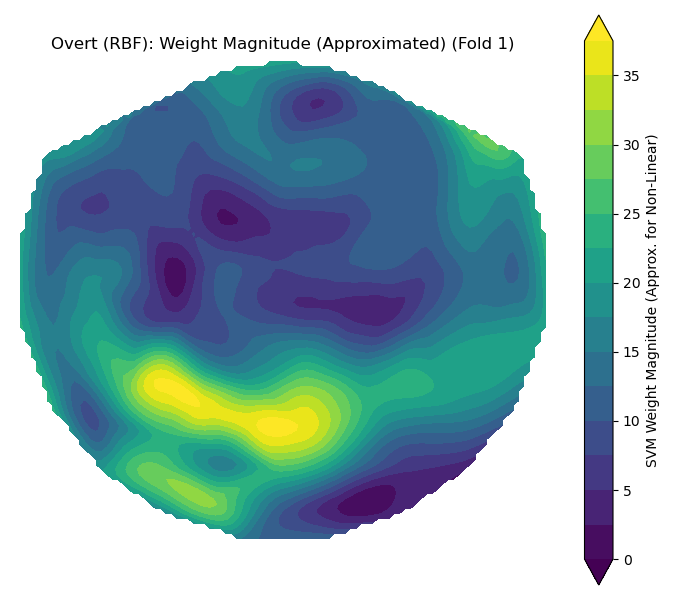 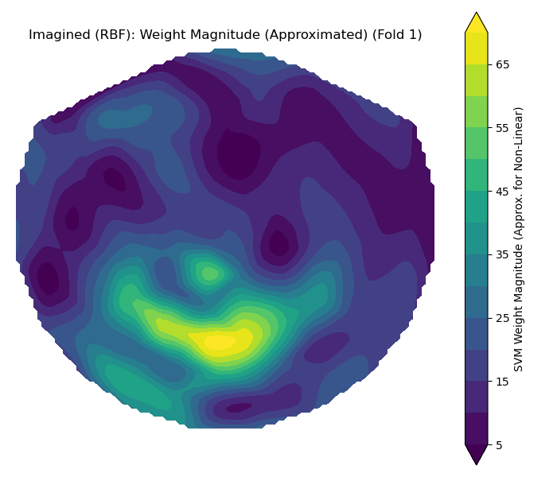
- Weight Interpretation: Visualizing feature importance for non-linear kernels like RBF isn’t as straightforward as plotting the weights (\(w\)) in the linear case. With a linear SVM, the weights directly correspond to the importance of a feature, but the same association doesn’t exist with different kernels. Therefore, we look at the performance metrics and also use approximations to map weights back to support vectors. However, these heatmaps still show a general distribution of “weights” in the same locations as the linear SVM.
3.3 Polynomial Kernel Classification Performance
Finally, let’s consider the Polynomial kernel. This kernel also allows for non-linear boundaries, with complexity controlled by the polynomial degree \(d\) (along with hyperparameters \(C\), \(\gamma\), and \(r\), all tuned via the inner CV loop).
3.3.1 Same-Train Scenarios (Polynomial SVM)
ROC Curves: Assume Figures 13 and 14 show the ROC curves for the Polynomial SVM on Overt and Imagined data.
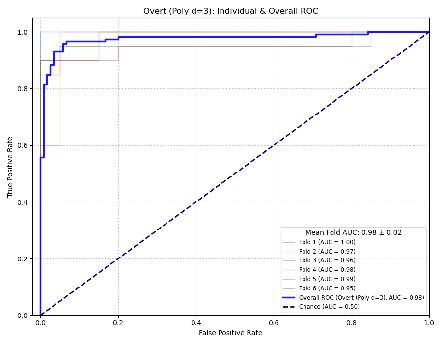 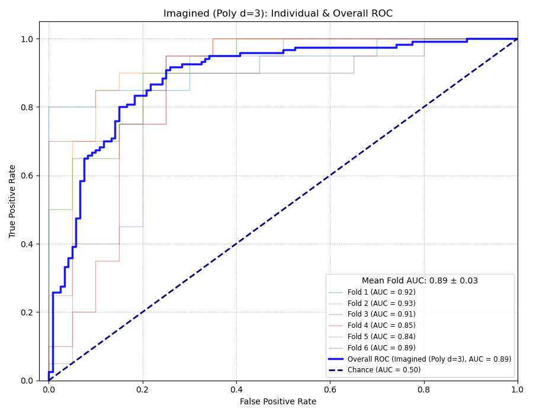
Interpretation: The average AUC for the Overt data (Figure 13) is approximately 0.98, slightly below the RBF kernel but comparable to the linear kernel. However, for the Imagined data (Figure 14), the average AUC drops significantly to around 0.89, which is much worse than both the linear (~0.92) and RBF (~0.94) kernels. This suggests the polynomial kernel might be struggling or potentially overfitting on the more difficult Imagined dataset.
Accuracy: Assume Tables 5 and 6 show the accuracy results and the optimal hyperparameter sets (\(C, \gamma, d, r\)) for each fold.
Fold Accuracy Optimal C 1/6 1.0000 10 2/6 0.9500 1 3/6 0.9500 100 4/6 0.9250 1 5/6 0.9500 1 6/6 0.9250 1 Avg 0.9508 Std Dev 0.0252 Fold Accuracy Optimal C 1/6 0.8250 10 2/6 0.8750 10 3/6 0.7750 10 4/6 0.7750 1 5/6 0.8250 10 6/6 0.8250 10 Avg 0.8167 Std Dev 0.0366 Interpretation: The average accuracy for the Polynomial kernel is ~95.1% on Overt data (Table 5), which is very close to the linear kernel’s performance. However, on the Imagined data (Table 6), the average accuracy drops to ~81.7%, noticeably lower than both the linear (~88.8%) and RBF (~85.4%) kernels. This confirms the trend seen in the AUCs – the polynomial kernel seems less effective for the imagined movement data in this experiment. Optimal \(C\) values varied widely, including a large value of 100 in one Overt fold.
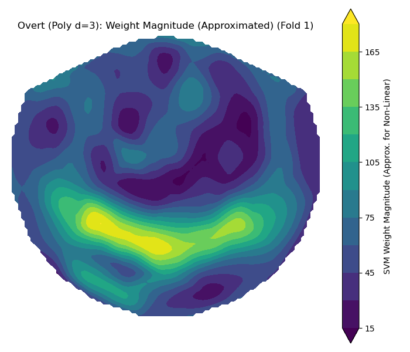 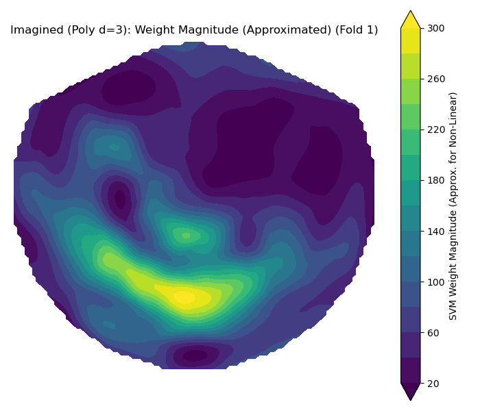
Interpretation: Similar as all the other heatmaps, we see the weights concentrated in the motor cortices.
4 Conclusions
So, wrapping things up, what did we find? This project aimed to demonstrate and compare how different Support Vector Machine configurations—using linear, RBF, and polynomial kernels—could interpret complex EEG signals to decode movement intentions. We focused on distinguishing between two movement types using signals from both overt and imagined actions.
Interpretation of Results & Scenario Comparison: Our analysis confirmed that SVMs can achieve high classification accuracy, with the linear kernel already providing strong baseline performance, particularly on the Overt data (~95.4% accuracy, ~0.98 AUC). Performance on Imagined data was consistently lower (~88.8% accuracy, ~0.92 AUC for linear), highlighting the challenge of decoding weaker signals. The exploration of non-linear kernels yielded mixed results. The RBF kernel showed slightly better AUC values (Overt ~0.99, Imagined ~0.94) but slightly lower average accuracies (Overt ~93.3%, Imagined ~85.4%) compared to the linear kernel, suggesting potential subtle overfitting or threshold effects despite capturing useful non-linearities. The Polynomial kernel performed comparably to linear on Overt data (~95.1% accuracy, ~0.98 AUC) but significantly worse on Imagined data (~81.7% accuracy, ~0.89 AUC), indicating its specific form of non-linearity was not beneficial and possibly detrimental for the harder task. Overall, the linear kernel provided the most consistent and robust performance across both accuracy and AUC, especially considering the Imagined data performance.
Cross-domain performance revealed interesting patterns for the linear kernel, with training on Imagined and testing on Overt (~91.3% Acc) working slightly better than the reverse (~89.2% Acc). The results consistently showed cross-train accuracies falling between the same-train Overt and Imagined performance, indicating shared but distinct neural patterns.
Factors, Limits, and Improvements: The signal strength difference between Overt and Imagined EEG remains a primary factor. Trial-to-trial variability and the information content of specific channels also play key roles. Limitations include the single-subject nature of the data and the unknown left/right mapping. While we explored different kernels, finding the linear kernel often performed best, further improvements could involve exploring other machine learning algorithms (like deep learning), testing on more subjects, and focusing on real-time implementation. The two-level cross-validation was crucial for obtaining reliable performance estimates and making fair comparisons between the SVM kernels.
Domain Knowledge & Model Insights: The weight analysis for the linear SVM provided neuroscientific validation, highlighting activity in expected motor areas, particularly the primary motor cortex. Even the approximate weight visualizations for non-linear kernels pointed towards similar brain regions, suggesting the core spatial information is robust. However, the performance differences indicate that the way these kernels combined the information mattered, with the non-linear approaches not consistently improving upon the linear baseline here, and sometimes hurting performance (especially Polynomial on Imagined data).
Considering cross-data training, the ideal approach probably involves leveraging the strengths of different data types and possibly models. Transfer learning or domain adaptation techniques remain promising avenues for building BCIs that work well in challenging real-world scenarios like decoding imagined movements, potentially starting with robust linear models.
Future Directions: This comparative analysis lays groundwork for future studies. Directly comparing SVMs (particularly linear, given its strong performance here) with other classifiers like specialized deep learning models designed for EEG could be insightful. Addressing the need for real-time processing and reducing reliance on extensive calibration are vital practical steps. Importantly, validating these decoding approaches across diverse participants, including the target population with motor impairments, is necessary to gauge clinical potential.
In conclusion, this project explored the application of various SVM kernels to the challenging task of EEG-based movement intention decoding. By systematically evaluating linear and non-linear approaches using robust two-level cross-validation, we gained insights into their respective strengths and weaknesses for this BCI application, finding that the linear kernel offered the most reliable performance overall. While challenges persist, especially for imagined movements and cross-condition generalization, this work contributes to the ongoing effort to develop powerful assistive technologies like BCIs and understand their optimal implementation in the medical field.
5 Collaborations
There were four main people I collaborated with:
Wanghley Soares Martin: I learned about this entire report format from him, as well as some information on using github pages and quarto to produce academic writing. He was very helpful in my exploration phase.
Peter Banyas: I discussed with peter how I could get approximate weights from non-linear kernels, and he recommended some approaches that I ended up using (getting the support vector coefficients)
Will Neuner: I talked with Will on LDOC about his regularization parameters, and we looked more closely at the implementation of two-level CV.
Evan Wen: Discussed results of implementing non-linear kernels and their implications.